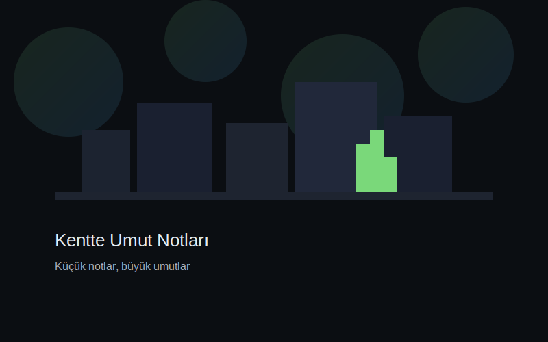

Kentte küçük notlar, büyük umutlar
Küçük bir cümlenin bir kente neler yapabileceğini birlikte görelim. Kaldırım kenarındaki bir çiçeğe, bir pencere ışığına, bir tebessüme tutunalım.
Kendi notunu ekle Notları keşfet

Manifesto
Umut, şehir dokusunda gizli bir ağdır. Amacımız, gündelik hayatın arasına sıkışmış küçük iyilikleri görünür kılmak ve paylaşmaktır. Estetik kaygıdan çok sadelik ve samimiyet önemlidir.
- Kısa ve öz cümleler
- Görsel etik: kişilerin yüzünü izinsiz paylaşma
- Mekânı onurlandır: zarar verme, iz bırakma
Seçilmiş Notlar
Not Ekle
Sık Sorulanlar
Bu proje ne?
Kentte Umut Notları, şehirde karşılaştığın küçük ama anlamlı anları kısa cümlelerle paylaşmanı teşvik eden bağımsız bir mikro proje.
Notlar nerede saklanıyor?
Şimdilik bu demo sitede tarayıcı içinde (yerel depolama) saklanır. Canlıya çıkarınca bir veritabanı ekleyebiliriz.
Görsel ekleyebilir miyim?
Bu ilk sürüm yazı odaklıdır. İleride görsel yükleme ve harita konumlandırmayı ekleyebiliriz.